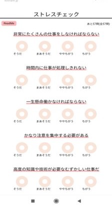
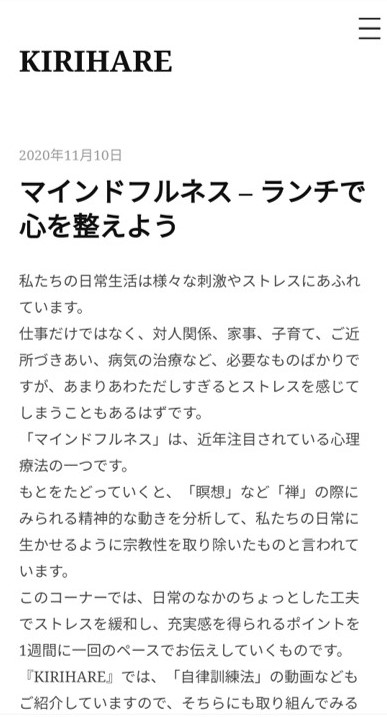
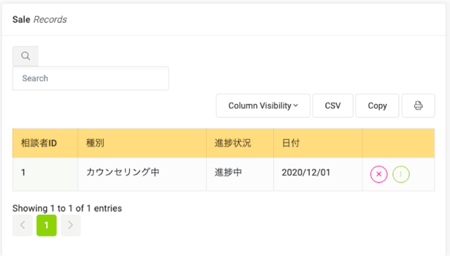
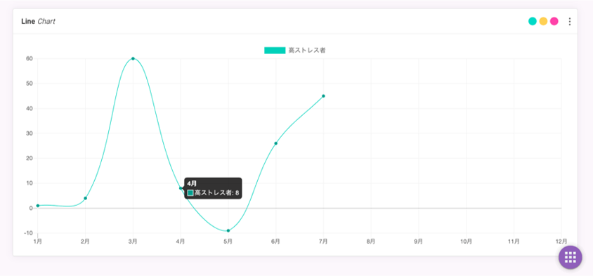
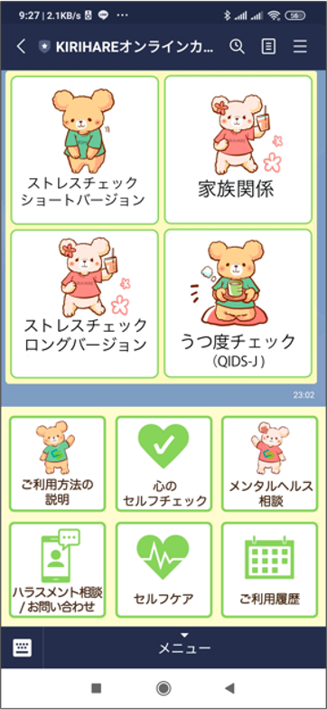

機能詳細
心理テスト機能

- 公式LINEを追加して頂くだけで、定期的にPUSH配信が届きます。
- ストレスチェックを「作業」と思わせない簡単な仕組みで提供します。
- 認知行動療法に基づいたセルフメンタルケアアプリケーションがご利用可能です
- 従業員はいつでも結果の確認が可能です。
LINEセルフケアコンテンツ

メンタルヘルスケアのためのセルフケアコンテンツを定期的に配信しています。
- ① マインドフルネス
- マインドフルネスのセルフケアを実践するコラムのPush配信
- ② 定期オンライン講座
- 心の体調を整えるため、講師によるオンライン（Zoom）でのセッション
- ③1行日記
- 認知心理学に基づいた感情把握アプリケーション
カウンセリング
「LINE相談」によって解決できない問題は案件化し、より専門性の高い臨床心理が対応致します。
ご利用可能者を部署等で制限可能です。以下のような対応フローになります。
- 家庭のお悩みの場合
- 臨床心理士が対応致します。
- お仕事でのお悩みの場合
- 相談者は臨床心理士、会社側は産業カウンセラが対応致します。
※カウンセリングはオンラインでもオフライン（提携カウンセリングオフィス）でも可能です。
人事責任者向け ストレスチェック機能

- ① 高ストレス者
- ストレスチェックで高ストレスと判定された従業員の総計
- 進捗状況やカウンセリング相談を開始した従業員の従業員の総計が表示されます。
- ハラスメント相談を開始した従業員の総計が表示されます。
- ② カウンセリング
- ④ メンタル不調者
- メンタル不調者の従業員の総計が表示されます。
人事責任者向け レポート作成機能

- ダッシュボード項目をグラフで表示し、報告用のレポートを作成することができます。
さらに、初回導入時に必要となる社員マスタ取込や、システムの利用方法などをサポート致します。
ハラスメント相談窓口

- ハラスメント窓口
- LINEからハラスメントのご相談が可能です。チャットによる有人対応、Botによる無人対応から、ストレスが掛からない方法を選択できます。
- お問い合わせ後、弊社スタッフが詳細な事実確認を行い、ご相談者の方がご希望された場合は人事責任者の方にシステムにて内容をご共有させていただきます。